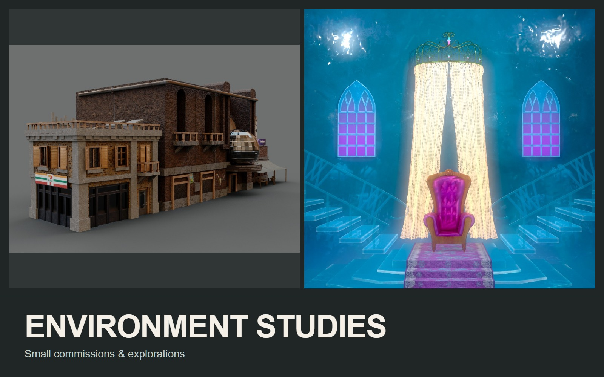

Environments
Environment Studies
Small commissions and experiments in architecture, scene layout, and lighting.

THE PROJECT
A collection of smaller environment projects: a freelance urban building and a stylized throne room.
- MY CONTRIBUTION / FOCUS
- Environment studies
Urban building: a small freelance architectural-modeling project. Throne room: environment and lighting presentation.
PROCESS & DESIGN
Architecture beyond the street-facing facade.
The urban building is shown through front, rear, and alternate street-side views, with the shopfronts and awnings visible in closer detail. The throne room moves from a full central-aisle composition to the throne and its surrounding light. Each remains a distinct small study within this collection.
Street rhythm
Signs, windows, and shop entrances break the facade into distinct sections.
Secondary views
The rear view adds rooftop units, pipes, and brick surfaces that are less visible from the street.
01 / Environment Studies
Urban building / freelance study
Two views expose different priorities: storefront rhythm at the front, and rooftop fixtures and brickwork at the rear.
02 / Environment Studies
Throne room / composition & light
A separate small environment study, grouped here rather than presented as a large standalone project.